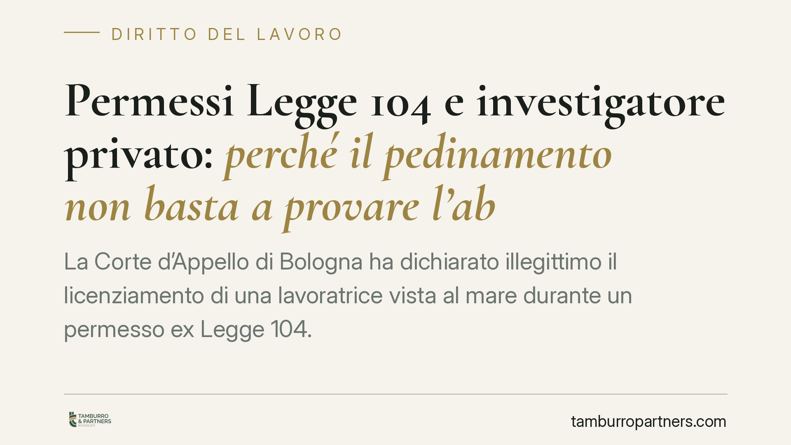

Permessi Legge 104 e investigatore privato: perché il pedinamento non basta a provare l'abuso
La Corte d'Appello di Bologna ha dichiarato illegittimo il licenziamento di una lavoratrice vista al mare durante un permesso ex Legge 104. Il pedinamento dell'investigatore privato dimostra l'assenza dal domicilio, non l'omessa assistenza al familiare disabile. L'onere di provare l'abuso resta sul datore di lavoro. Esito: reintegra e dodici mensilità di risarcimento.

Il fatto
Una lavoratrice fruiva dei permessi mensili retribuiti previsti per assistere un familiare con disabilità grave. Il datore di lavoro, insospettito, incaricava un'agenzia investigativa di pedinarla. L'investigatore la documentava al mare in una delle giornate di permesso. Ne seguiva il licenziamento per abuso del diritto.
La Corte d'Appello di Bologna ha ribaltato l'impostazione del datore: il controllo investigativo provava l'allontanamento dall'abitazione, ma non la mancata prestazione di assistenza. Da qui la dichiarazione di illegittimità del recesso, con ordine di reintegra e condanna a dodici mensilità di risarcimento.
Inquadramento normativo
L'art. 33 della Legge 104/1992 riconosce al lavoratore che assiste un familiare con handicap grave tre giorni di permesso mensile retribuito. La ratio è consentire l'assistenza, non imporre al lavoratore una reclusione domiciliare per l'intera giornata.
La giurisprudenza di legittimità ha chiarito che l'abuso del permesso sussiste quando il tempo viene utilizzato per attività del tutto estranee alla cura del disabile, con interruzione del nesso tra assenza dal lavoro e finalità assistenziale. Non è però richiesta una presenza continuativa e ininterrotta accanto al familiare: l'assistenza può articolarsi in momenti diversi e includere incombenze esterne.
Sul piano sanzionatorio, la disciplina del licenziamento varia a seconda della data di assunzione: per i rapporti anteriori al 7 marzo 2015 opera l'art. 18 dello Statuto dei lavoratori come riformato dalla Legge 92/2012 (riforma Fornero); per i successivi si applica il D.lgs. 23/2015 (Jobs Act). In entrambi i regimi, l'insussistenza del fatto contestato apre alla tutela reintegratoria.
Il punto decisivo: l'onere della prova
Il cuore della decisione è la distribuzione dell'onere probatorio. Spetta al datore di lavoro dimostrare l'abuso, cioè che il permesso è stato impiegato per finalità del tutto avulse dall'assistenza.
Il pedinamento, da solo, non assolve questo onere. Documentare che la lavoratrice si trovava al mare prova un fatto neutro: l'assenza da un luogo. Non prova che l'assistenza al familiare sia stata omessa nell'arco della giornata, né che la fruizione del permesso fosse fraudolenta. La Corte ha ritenuto insufficiente un quadro indiziario costruito su una sola osservazione temporale.
In altri termini, il controllo investigativo è legittimo ma ha un valore probatorio circoscritto. Serve a documentare condotte, non a presumere intenzioni.
Implicazioni pratiche
Per il datore di lavoro, la pronuncia conferma che la contestazione di abuso dei permessi 104 richiede una ricostruzione completa della giornata e del comportamento complessivo del lavoratore. Un singolo avvistamento, per quanto documentato, è una base fragile per un recesso disciplinare.
Per il lavoratore, la decisione ribadisce che la fruizione del permesso non impone l'isolamento domiciliare, ma non legittima un uso scollegato dalle esigenze assistenziali. Il margine esiste, ma non è illimitato.
Per entrambe le parti, il tema dell'investigatore privato merita attenzione: il controllo difensivo è ammesso per accertare illeciti, non per una generica sorveglianza dell'adempimento della prestazione.
Cosa fare in concreto
- Datore di lavoro: prima di contestare l'abuso, raccogli elementi che coprano l'intera giornata di permesso, non singoli frammenti. Verifica che il controllo investigativo sia mirato a un sospetto specifico di illecito.
- Datore di lavoro: valuta la proporzionalità della sanzione e il regime applicabile (art. 18 o D.lgs. 23/2015), per stimare il rischio economico in caso di impugnazione.
- Lavoratore: documenta, quando possibile, l'attività assistenziale svolta durante il permesso (visite mediche, acquisti, incombenze per il familiare).
- Lavoratore: in caso di contestazione o licenziamento, impugna nei termini di legge e raccogli prove sull'effettivo impiego del tempo.
- Entrambi: fate verificare la condotta investigativa, perché un controllo sproporzionato o illegittimo può inficiare l'intero impianto probatorio.
Disclaimer
Contributo informativo a cura di Tamburro & Partners - Avv. Giuseppe Tamburro. Non costituisce parere legale.
Ogni storia di lavoro ha i suoi tempi.
Se gestisci HR e vuoi un confronto su contenzioso, ispezioni o licenziamenti, scrivi allo studio. Ti rispondiamo entro un giorno lavorativo.